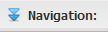
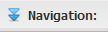

La grille de navigation¶

Figure 10 : Grille de navigation.
La grille de navigation permet d’afficher et de parcourir les détails de l’objet sélectionné dans la grille principale :
- à partir d’un projet, vous pouvez naviguer vers ses modèles;
- à partir d’un modèle, vous pouvez naviguer vers ses entités;
- à partir d’une entité, la navigation se fait vers ses propriétés, ses relations et ses vues.
Deux façons pour afficher la grille de navigation :
- par la fonction Navigation du menu des fonctions : cliquez sur le bouton Navigation;
- par la barre de navigation de la grille principale : cliquez sur une des options situées sur la barre de navigation.
Pour voir les détails d’un autre objet, vous n’avez qu’à cliquer sur celui-ci dans la grille principale et le contenu de la grille de navigation sera actualisé automatiquement.
Pour visualiser l’information d’un modèle de la grille de navigation, sélectionnez le modèle sur la grille, ensuite, cliquez sur l’icône  pour ouvrir le formulaire de visualisation en mode de lecture.
pour ouvrir le formulaire de visualisation en mode de lecture.
Pour cacher la grille de navigation, cliquez sur le bouton  situé en haut au milieu de cette même grille ou sur le bouton .
situé en haut au milieu de cette même grille ou sur le bouton .
Il est possible de choisir le nombre de résultats affichés par page, rafraichir les résultats affichés sur la grille et ouvrir les résultats dans un nouvel onglet à partir de la barre en dessous de la grille.